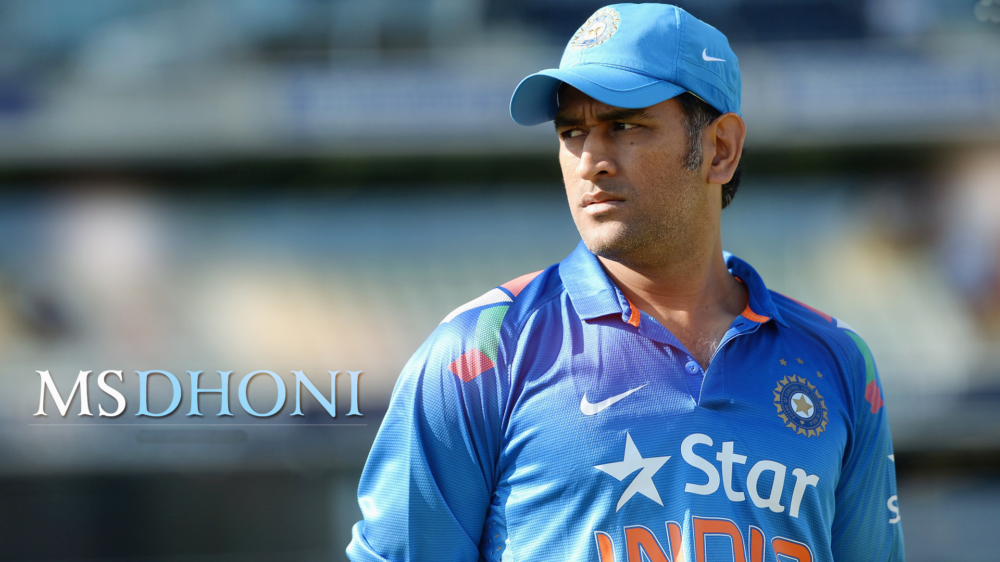

MSD, Mr.Cool...!

Mahendra Singh Dhoni is an Indian cricketer who captained the Indian team in limited-overs formats from 11th of September 2007 to 4th of January 2017 and in Test cricket from 2008 to 28th of December 2014.
Some more details about MSD:
- Born: 7 July 1981 (age 36), Ranchi
- Height: 1.75 m
- Spouse: Sakshi Dhoni (m. 2010)
- Awards: Padma Shri, Rajiv Gandhi Khel Ratna, MORE
- Movies: Sachin: A Billion Dreams
- Siblings: Jayanti Gupta, Narendra Singh Dhoni
For more information about MSD click here